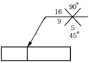

방사선비파괴검사기능사 (2002-10-06 기출문제)
1과목: 방사선투과시험법
1. 기계적, 전기적으로 안정하고 액체에 불용성이며 사용수명이 긴 것은 어떤 진동자로 만든 탐촉자인가?
- 황산리튬
- 티탄산 바륨
- 수정
- 로켈레(Rochelle)염
(정답률: 알수없음)

2. 원형자화법에서 자화력을 암페어로 표시할 때 선형자화법에서 자화력을 나타내는데 쓰이는 단위는?
- 암페어
- 암페어x코일권수
- 전압(volts)
- 웨버(weber)
(정답률: 알수없음)
3. 표면온도 4℃의 철구조물 용접부를 침투탐상시험시 침투액 적용 전에 용접부를 일정하게 20℃로 가열하면 어떻게 되는가?
- 탐상감도가 증가한다.
- 탐상감도가 감소된다.
- 탐상감도가 변하지 않는다.
- 침투액의 안정도가 증가된다.
(정답률: 알수없음)
4. 다음 중 수세성 침투탐상시험의 장점은?
- 표면이 거친 부분에 적합하다.
- 표면이 매끈한 부분에 좋다.
- Scratch 등의 판정에 좋다.
- 넓고 얕은 결함 탐지에 좋다.
(정답률: 알수없음)
5. 다음 중 방사선 방호용 차폐체로서 가장 효과적인 것은?
- 납
- 철
- 텅스텐
- 청동
(정답률: 알수없음)
6. 방사선투과사진을 20mA, 1분에서 양질의 상을 얻었다. 다른 조건은 고정시키고 관전류만 35mA로 하면 노출시간은?
- 25초
- 34초
- 42초
- 48초
(정답률: 알수없음)
7. 시험체의 내부와 외부 즉 계와 주위의 압력차를 만들 때 주위의 압력은 대기압으로 두고 계의 압력을 가압하거나 감압하여 결함을 탐상하는 비파괴검사법은?
- 초음파탐상시험
- 누설시험
- 와전류탐상시험
- 침투탐상시험
(정답률: 알수없음)
8. 공업용 X선 장치의 실용 X선 관전압을 10-400kV 정도 얻기 위해서 가장 유효한 전자 가속방식은?
- 공진 변압기
- 철심 변압기
- 선형 발전기
- 정전 발전기
(정답률: 알수없음)
9. 휴대용 X선발생장치를 소형 경량으로 할 수 있는 이유는?
- 고전압 변압기의 절연체로 SF6기체를 사용하기 때문
- 공진변압기 방식을 채택하고 있기 때문
- 고전압회로를 자기정류회로로 채택하고 있기 때문
- IC집적 회로를 채택하고 있기 때문
(정답률: 알수없음)
10. X선관에서 표적(양극)물질로 텅스텐을 사용하는 이유가 아닌 것은?
- 융점이 높다.
- 특성 X선을 낸다.
- 원자번호가 크다.
- X선 발생효율이 좋다.
(정답률: 알수없음)
11. 방사선투과시험에 주로 사용되는 방사성 동위원소들로서 다음 중 반감기가 가장 짧은 것은?
- 60Co
- 137Cs
- 192Ir
- 170Tm
(정답률: 알수없음)
12. 방사선투과사진에 있어서 산란선의 작용으로 맞는 것은?
- 전방 산란선은 사진콘트라스트를 높인다.
- 후방 산란선은 사진콘트라스트를 높인다.
- 전,후방 산란선은 사진콘트라스트를 높인다.
- 전,후방 산란선은 사진콘트라스트를 저하시킨다.
(정답률: 알수없음)
13. 계조계의 배치에 관한 사항중 옳지 못한 것은?
- 시험부의 선원측에 배치
- 시험부에 걸쳐 양쪽에 되도록 멀리 배치
- 시험부중앙에서 과히 떨어지지 않은 모재면상에 배치
- 계조계의 두께가 변화하는 방향이 시험부와 평행되게 배치
(정답률: 알수없음)
14. 60Co 100Ci로 시험물에 조사할 때 film 전면에 붙일 연박 증감지의 두께는 최대한 몇 mm까지의 두께가 좋은가?
- 0.1mm
- 0.03mm
- 2.2mm
- 0.3mm
(정답률: 알수없음)
15. 방사선투과검사시 필름 현상처리전에 나타난 인공결함이라고 볼 수 없는 것은?
- 구겨짐 표시
- 눌림 표시
- 언더컷 표시
- 정전기 표시
(정답률: 알수없음)
16. 다음 중 필름현상시의 정지액은 보통 어느 것이 좋은가?
- 1% 빙초산 용액
- 3% 빙초산 용액
- 7% 빙초산 용액
- 10% 빙초산 용액
(정답률: 알수없음)
17. 방사선투과시험에 대한 다음 설명 중 잘못된 것은?
- 필름 취급 장소의 상대 습도는 60-70%가 알맞다.
- 정지액은 빙초산 3% 수용액을 사용한다.
- 현상액의 보충은 최초 액의 1/2 씩 보충한다.
- 수세는 28℃ 정도의 흐르는 물에서 10분간 한다.
(정답률: 알수없음)
18. 방사선투과시험시 X-선관의 초점이 작으면?
- 수명이 짧아진다.
- 상이 흐려진다.
- 투과력이 좋아진다.
- 명료도가 좋아진다.
(정답률: 알수없음)
19. 현상후 필름에 뿌연 안개현상(Fogging)이 나타나는 주된 원인이 아닌 것은?
- 사용전 필름의 보관 상태 불량
- 암등에 의한 과도한 노출
- 현상액의 온도 상승
- 정지액의 능력 저하
(정답률: 알수없음)
20. 다음 중 방사선투과시험의 촬영방법 선택을 위한 필수적 3요소가 아닌 것은?
- 증감지
- 시험체
- 필름
- 방사선 선원
(정답률: 알수없음)
2과목: 방사선안전관리 관련규격
21. 엑스선과 감마선의 특성에 대한 설명으로 틀린 것은?
- 감마선은 일종의 전자파이다.
- 엑스선과 감마선은 그 성질이 거의 비슷하다.
- 감마선의 에너지는 아주 높으나 주파수는 낮다.
- 엑스선이나 감마선은 사람의 감각으로는 감지할 수 없다.
(정답률: 알수없음)
22. X선 필름을 수동현상할 때 가장 적합한 현상액의 온도는?
- 10∼15℃
- 18∼22℃
- 25∼30℃
- 32∼35℃
(정답률: 알수없음)
23. 다음중 노출도표상에 반드시 기재되지 않아도 되는 것은?
- 필름(film) type 및 농도
- 현상조건
- 증감지의 종류
- 장비의 일련번호 및 명칭
(정답률: 알수없음)
24. 방사성 동위원소 핵종에 있어서 동중성자 핵종끼리 짝지어진 것은?
- 92U235, 92U238
- 7N15, 8O15
- 7N14, 8O15
- 27Co60, 27Co60m
(정답률: 알수없음)
25. 방사선 투과사진에 대한 상질의 확인방법에서 시험부의 유효범위에 대한 설명과 관계가 먼 것은?
- 2개의 투과도계중 한 쪽이 규정값을 만족하지 않으면 그 사진은 불합격으로 한다.
- 사진농도가 규정범위를 만족하지 않으면 그 사진은 불합격으로 한다.
- 부분적으로 사진농도를 만족하지 않는 부분은 유효길이에서 제외한다.
- 투과도계 식별도는 시험부에 해당되는 모재부에서도 식별되어야 한다.
(정답률: 알수없음)
26. Ir-192 감마선 조사기를 사용하는 종사자가 방사선량율이 100mR/h인 곳에서 작업하려면 1일 작업시간을 얼마로 제한하면 되겠는가? (단, 1일 허용선량이 20mR일 때)
- 6분
- 12분
- 1시간
- 12시간
(정답률: 알수없음)
27. 다음은 선량한도의 적용에 대한 설명이다. 잘못된 것은?
- 선량한도는 외부피폭선량과 내부피폭선량을 합한 선량으로 적용한다.
- 방사성 동위원소를 사용하는 종사자의 경우는 방사선 발생장치의 사용에 의한 선량을 포함하지 않는다.
- 방사성 동위원소를 제한적으로 사용할 때 일반인에 대한 선량은 연간 선량한도를 초과하지 않는 범위내에서 주당 0.1mSv까지 허용한다.
- 방사성 동위원소를 일시적으로 사용할 때 일반인에 대한 선량은 연간 선량한도를 초과하지 않는 범위내에서 시간당 7.5μSv까지 허용한다.
(정답률: 50%)
28. 다음 중 연간 유효선량한도로 옳은 것은?
- 종사자 - 연간 50mSv를 넘지 않는 범위에서 5년간 100mSv, 수시출입자 - 30mSv, 일반인 - 5mSv
- 종사자 - 연간 50mSv를 넘지 않는 범위에서 5년간 100mSv, 수시출입자 - 12mSv, 일반인 - 1mSv
- 종사자 - 연간 100mSv를 넘지 않는 범위에서 5년간 200mSv, 수시출입자 - 30mSv, 일반인 - 1mSv
- 종사자 - 연간 100mSv를 넘지 않는 범위에서 5년간 200mSv, 수시출입자 및 일반인 - 5mSv
(정답률: 알수없음)
29. 방사선 작업자의 외부피폭을 방어하기 위하여 다음 중 고려하지 않아도 되는 것은?
- 차폐 보강
- 적당한 거리
- 표면의 청결도
- 작업 시간
(정답률: 알수없음)
30. 다음 기기중 설명이 잘못된 것은?
- TLD(티엘디)는 개인 피폭선량 측정용이다.
- 서베이메터는 교정하지 않아도 된다.
- 동위원소 회수시 서베이메터로 관찰해야 한다.
- 포켓도시메터로 선량율을 측정해서는 안된다.
(정답률: 알수없음)
31. 방사선과 관련하여 반치사량(LD-50)이란 50% 사망할 수 있는 피폭선량을 말한다. 이는 몇 rem 정도를 말하는가?
- 100rem
- 400rem
- 700rem
- 1000rem
(정답률: 알수없음)
32. 다음에 적은 사항중 틀린 것은?
- 긴급작업에 종사하는 자에 대한 유효선량은 0.5Sv 이다.
- 긴급작업으로 인하여 피폭된 선량은 집적선량에 가산한다.
- 진료를 받기 위하여 피폭되는 선량은 집적선량에 가산하다.
- 공기 또는 수중에 자연적으로 함유된 방사성물질의 농도는 제외한다.
(정답률: 알수없음)
33. 방사선 작업종사자에 대한 선량한도가 틀린 것은?
- 유효선량한도 : 연간 50mSv(단, 5년간 100mSv이내)
- 등가선량한도(수정체) : 연간 150mSv
- 등가선량한도(피부) : 연간 150mSv
- 등가선량한도(손,발) : 연간 500mSv
(정답률: 알수없음)
34. 방사선 작업종사자의 건강 진단시 검사해야 할 항목이 아닌 것은?
- 적혈구
- 백혈구
- 모발
- 혈색소량
(정답률: 알수없음)
35. KS D 0237에 의한 방사선투과검사시 모재두께가 12㎜인 스테인리스강을 양면 덧살 붙임 맞대기 용접을 하였는데 실측이 불가능한 경우 촬영하기 위한 재료의 두께는 얼마로 계산하는가?
- 12㎜
- 14㎜
- 16㎜
- 24㎜
(정답률: 알수없음)
36. KS B 0845에서 강판의 T용접 이음시 투과사진의 상질의 적용 구분으로 알맞는 것은?
- A급
- F급
- P1급
- P2급
(정답률: 알수없음)
37. KS B 0845에 의한 흠(결함)에 대한 종별이 잘못 짝지어진 것은?
- 텅스텐 말아 넣음 : 제 4종
- 갈라짐 : 제 4종
- 슬래그 말아 넣음 : 제 2종
- 용입 불량 : 제 2종
(정답률: 알수없음)
38. 알루미늄 원주용접부를 KS D 0243에 의거 2중벽 양면촬영으로 방사선투과검사를 할 때 관 두께가 15mm라면 사용되어야할 계조계는?
- D 0
- E O
- F O
- G O
(정답률: 알수없음)
39. KS D 0242의 규정에 의거 방사선투과사진의 판정시 시험부의 두께가 20mm이상 40mm미만일 때 결함으로 계산하지 않는 블로 홀의 최대 크기는?
- 0.6mm
- 0.8mm
- 1.0mm
- 1.2mm
(정답률: 알수없음)
40. KS D 0239에서 양면 덧살이 있는 용접부의 모양일 때, 사용되는 재료 두께는?
- 2.0 × T
- 2.0 × T + 2
- 2.0 × T + 4
- 2.2 × T
(정답률: 알수없음)
3과목: 금속재료일반 및 용접 일반
41. KS B 0845에서 상질이 A급인 경우 투과사진의 농도범위로 알맞는 것은?
- 1.5 이상 3.5 이하
- 1.3 이상 4.0 이하
- 1.8 이상 4.5 이하
- 2.0 이상 4.0 이하
(정답률: 알수없음)
42. 소성가공한 금속재료를 고온으로 가열할 때 일어나는 현상이 아닌 것은?
- 내부 응력제거
- 재결정
- 경도의 증가
- 결정입자의 성장
(정답률: 알수없음)
43. 고온에서 Ni을 가장 쉽게 산화시킬 수 있는 가스는?
- CO2 가스
- H2 가스
- CO 가스
- SO2 가스
(정답률: 알수없음)
44. 동일한 조건에서 열전도율이 가장 큰 것은?
- Ag
- Au
- Cu
- Mg
(정답률: 알수없음)
45. 순철의 동소변태에 해당되는 온도는?
- 약 210℃
- 약 700℃
- 약 912℃
- 약 1600℃
(정답률: 알수없음)
46. 상온에서 순철(α철)의 결정 격자는?
- 면심입방격자
- 조밀육방격자
- 체심입방격자
- 정방격자
(정답률: 알수없음)
47. γ철을 맞게 표현한 것은?
- 페라이트
- 시멘타이트
- 오스테나이트
- 솔바이트
(정답률: 알수없음)
48. 철-탄소계의 평형 상태도에서 공정점의 탄소량(%)은?
- 0.2
- 0.8
- 1.5
- 4.3
(정답률: 알수없음)
49. 흑연화를 목적으로 백선을 열처리하는 것은?
- 흑심가단주철
- 칠드주철
- 보통주철
- 합금주철
(정답률: 알수없음)
50. 주철에서 흑연구상화처리시 첨가하는 금속은?
- Mg, Ca
- Pb, Sn
- Cu, Ag
- Zn, Mn
(정답률: 알수없음)
51. 다음의 표면경화법 중 금속 시멘테이션(cementation)법이 아닌 것은?
- 크로마이징(chromizing)
- 질화법(nitriding)
- 칼로라이징(calorizing)
- 보로나이징(boronizing)
(정답률: 알수없음)
52. 공업용 재료에 사용되는 재료 중에서 비중과 강도비가 크고 내식성 및 내열성도 좋아 항공기, 로켓 재료로 쓰이는 합금으로 비중이 약 4.5인 금속은?
- Ti
- Mg
- Al
- Fe
(정답률: 알수없음)
53. 은백색으로 전연성이 좋아 박(foil)이나 가는 선으로 사용되는 금속으로 비중이 약 10.5 인 금속은?
- 금
- 은
- 철
- 황
(정답률: 알수없음)
54. 그림과 같은 용접기호 해독으로 올바른 것은?

- 화살표쪽 홈의 깊이는 16mm, 45° 홈인 X형 용접이다.
- 화살표 반대쪽의 홈의 깊이는 9mm, 90° 홈인 X형 용접이다.
- 화살표쪽의 홈은 45° , 홈의 깊이는 5mm인 X형 용접이다.
- 화살표쪽의 홈은 45° , 루트 간격 5mm 인 X형 용접이다.
(정답률: 알수없음)
55. 점용접 조건의 3요소가 아닌 것은?
- 전류의 세기
- 통전시간
- 너켓(nugget)
- 가압력
(정답률: 알수없음)
56. 15 ℃ 15기압하에서 아세톤 30ℓ 가 들어있는 아세틸렌 용기에 용해된 최대 아세틸렌의 양은?
- 30ℓ
- 450ℓ
- 6750ℓ
- 11250ℓ
(정답률: 알수없음)
57. 다음 중 인터넷을 사용할 때 영문으로 표현된 도메인이름을 컴퓨터가 가지고 있는 IP주소로 변환시켜 주는 것은?
- DTS
- DNT
- DNS
- DNP
(정답률: 알수없음)
58. 컴퓨터의 하드웨어 중 임시 데이터 저장 능력을 가진 휘발성 기억 장치는?
- RAM
- ROM
- HDD
- FDD
(정답률: 알수없음)
59. PC 윈도우의 보조 프로그램 중 녹음기에서 지원하는 파일은?
- *.AVI
- *.MID
- *.WAV
- *.MP3
(정답률: 알수없음)
60. 컴퓨터와 단말기 사이, 또는 두 컴퓨터 사이에 데이터를 주고받는데 적용되는 일련의 규약을 가리키는 것은?
- 토폴로지
- 대여폭
- 프로토콜
- 브리지
(정답률: 알수없음)